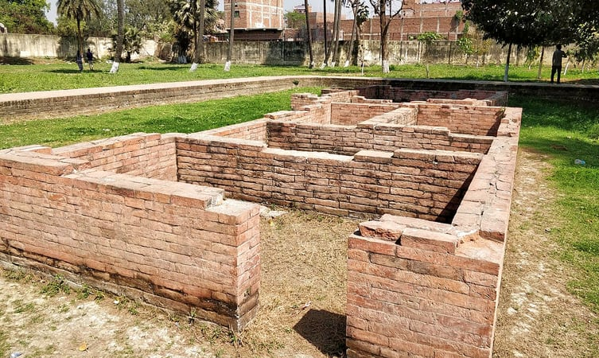

One of the most fascinating historical places in Bihar, Kumhrar is a small town in the outskirts of Patna city, famous for housing the archaeological remnants of the ancient Pataliputra. A myriad of excavation operations have been performed here and many interesting ruins have been unearthed. One of the most wonderful ruins is that of the 80-pillared sandstone hall, which dates back to 300 BC.
Other ruins that you can witness here are that of Anand Vihar, Durakhi Devi Temple, the Assembly Hall, and Arogya Vihar. Another attraction in Kumhrar is the Kumhrar Park, a magnificent expanse of lush greens.
Historical Facts:
-This is the place where the remains of the Mauryan Period were discovered.
-The findings here date back to 600 BCE.
-The place has been the capital of various ancient kingdoms including the Ajatshatru, Chandragupta and Ashoka.
Architecture:
-Its assembly hall has around 80 pillars and is arranged in 8 rows of 10 pillars each with a distance of 4.57 m in between.
-The pillars are made up of black spotted buff sandstone, and have a height of 9.75 metres to sustain a wooden roof.
Location: Patna District, Bihar